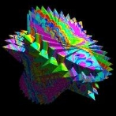

Reporting Bugs¶
{kind=link}

Overview¶
The LibTIFF project uses GitLab issues to report and manage bugs and feature requests.
Please let us know when you find a problem or fix a bug.
Previously, the project used MapTools.org bugzilla to track bugs. All remaining tickets in that bugzilla instance were migrated to GitLab issues, and this system should no longer be used. All bugs filed in a older bugzilla at 'RemoteSensing.org (bugzilla.remotesensing.org)' (pre-April 2008) have unfortunately been lost.
Reporting a bug¶
If you think you've discovered a bug, please first check to see if it is already known by looking at the list of already reported bugs. Also, please verify that the problem is still reproducible with the current development software from GitLab.
If you'd like to enter a new bug report, you can create a new GitLab issue
Of course, reporting bugs is no substitute for discussion. Please see the Mailing List page for further details.
Reporting a security issue¶
If you'd like to inform us about some kind of security issue that should not be disclosed for a period of time, then you can contact the maintainers directly. Send a copies of your report to the following people:
Frank Warmerdam mailto:warmerdam@pobox.com
Bob Friesenhahn mailto:bfriesen@simple.dallas.tx.us.